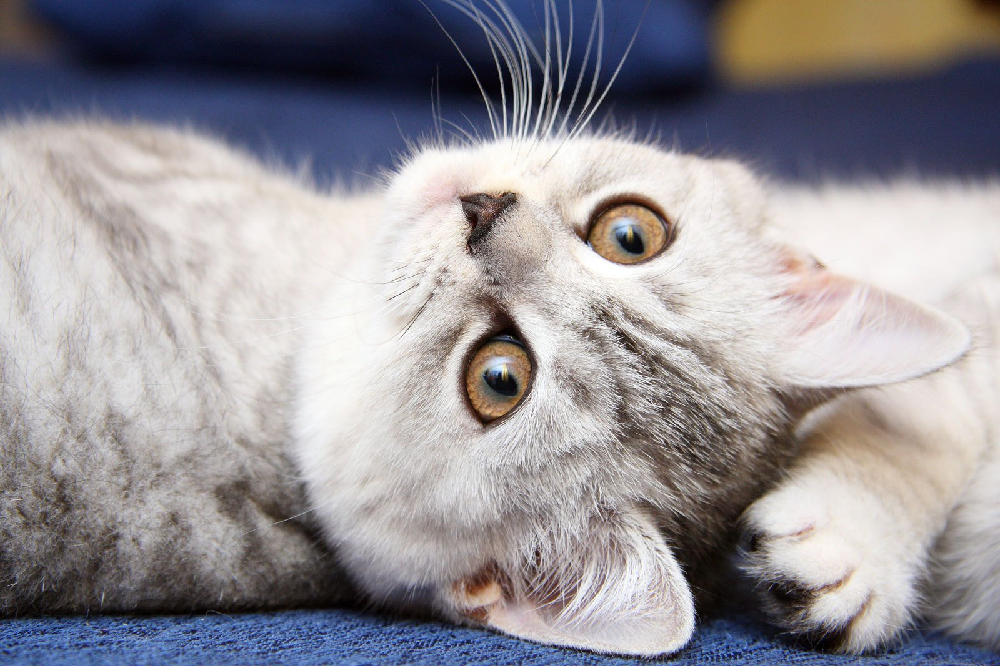
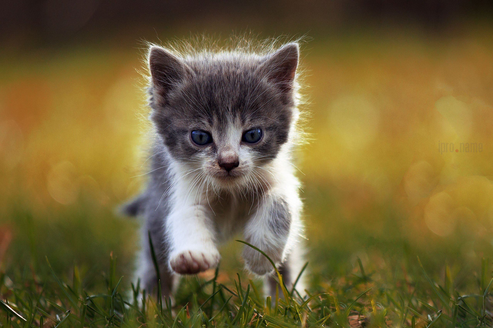
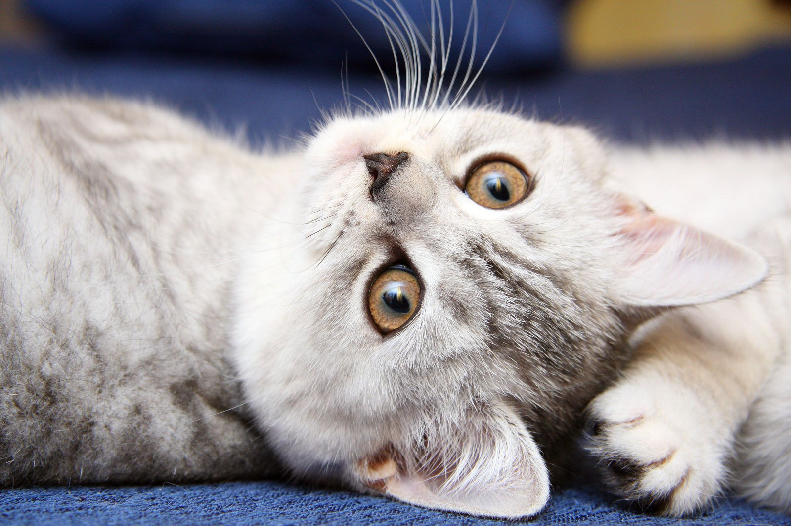
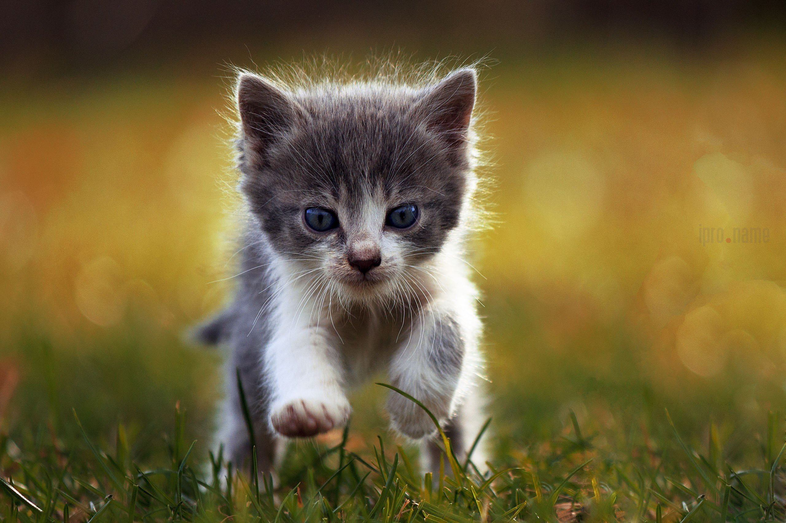

Во-первых, кошки обладают невероятной красотой. Их мягкая шерсть, яркие глаза и разнообразные окрасы не могут оставить равнодушным никого. Каждый кот имеет свою неповторимую внешность, и это делает их еще более привлекательными.
Во-вторых, кошки очень умны и хитры. Они умеют находить выход из самых сложных ситуаций и всегда знают, как добиться своего. Наблюдать за их поведением - одно удовольствие!
В-третьих, кошки - прекрасные компаньоны. Они могут быть очень ласковыми и заботливыми, особенно когда чувствуют, что их хозяину плохо или он нуждается в поддержке. Кошки умеют успокаивать и поднимать настроение, что делает их незаменимыми друзьями.
Также мне нравится, что кошки независимы и не требуют много внимания. Они могут прекрасно обходиться без хозяина, но при этом всегда рады его компании.
Конечно, есть и минусы содержания кошки.
Например, они могут царапать мебель и портить обои, а также могут быть довольно упрямыми и непослушными. Но все эти недостатки компенсируются теми положительными эмоциями, которые кошки дарят своим хозяевам.
Спасибо за внимание, а теперь просто получите привет от котика.
 


